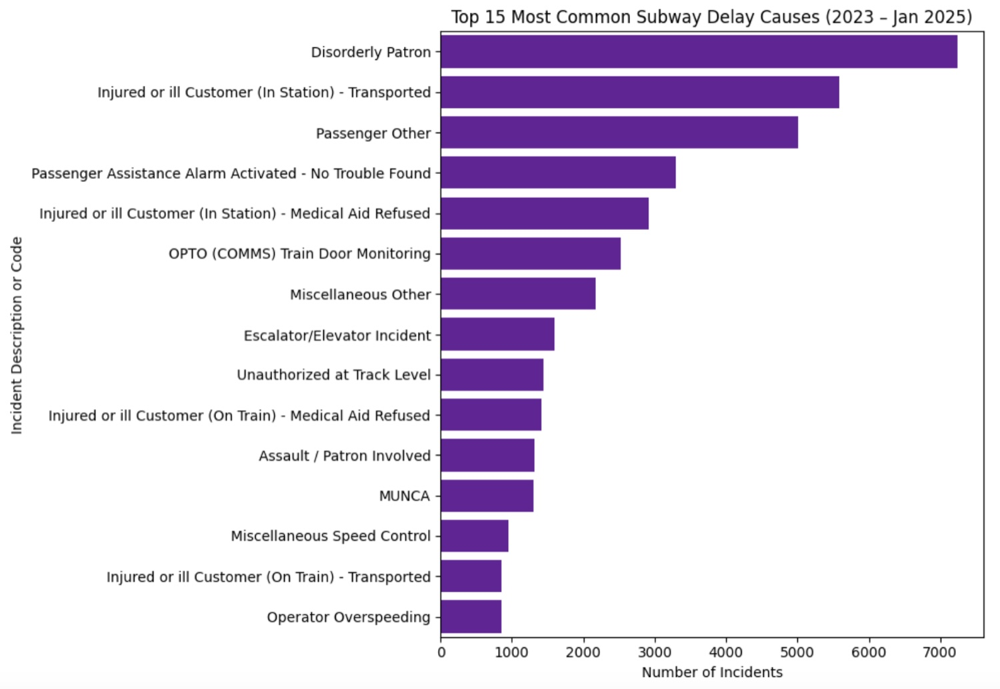
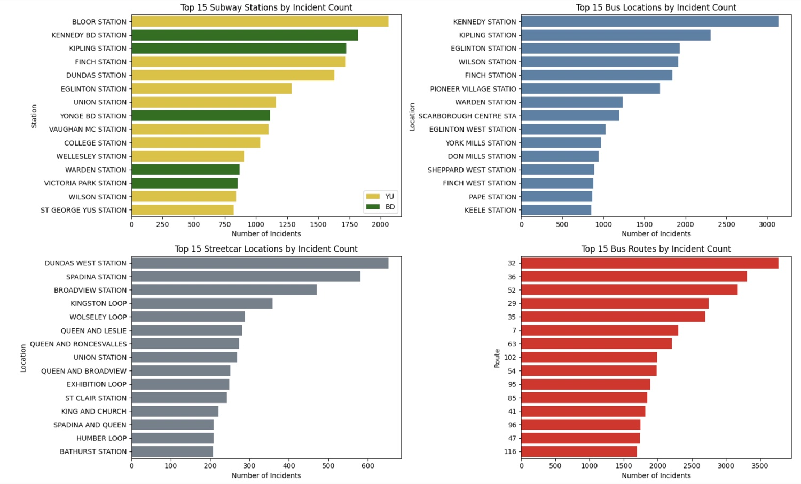
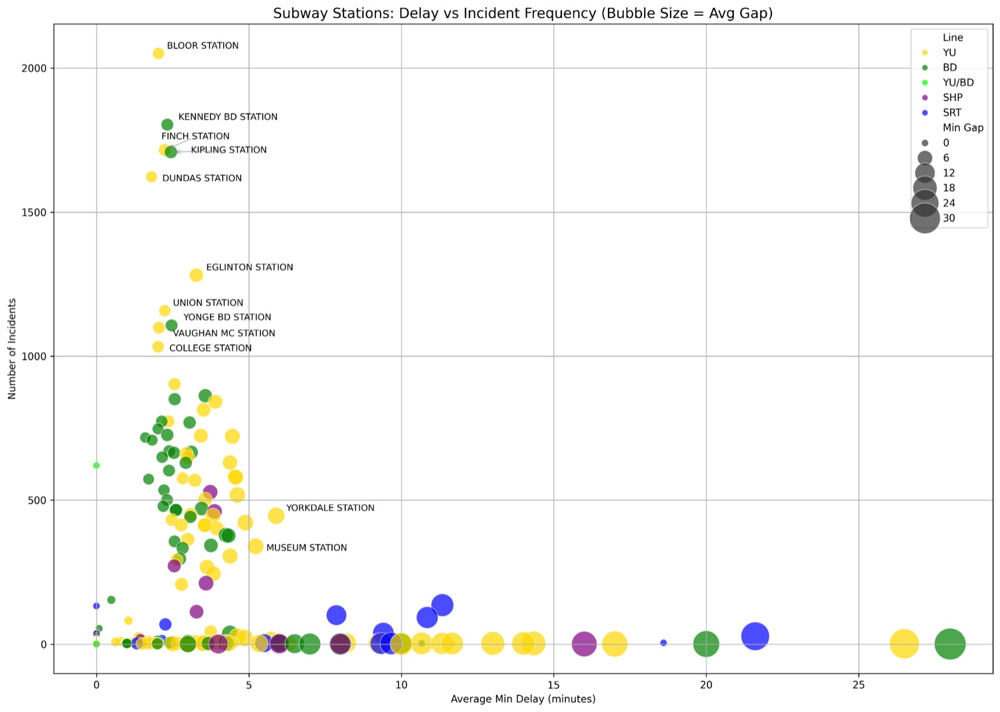
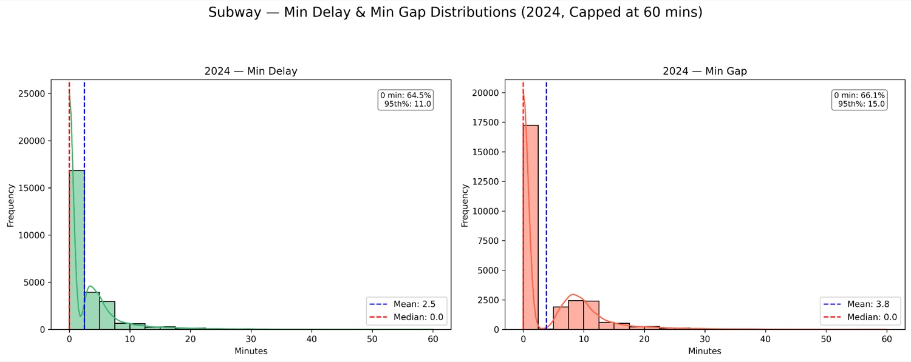
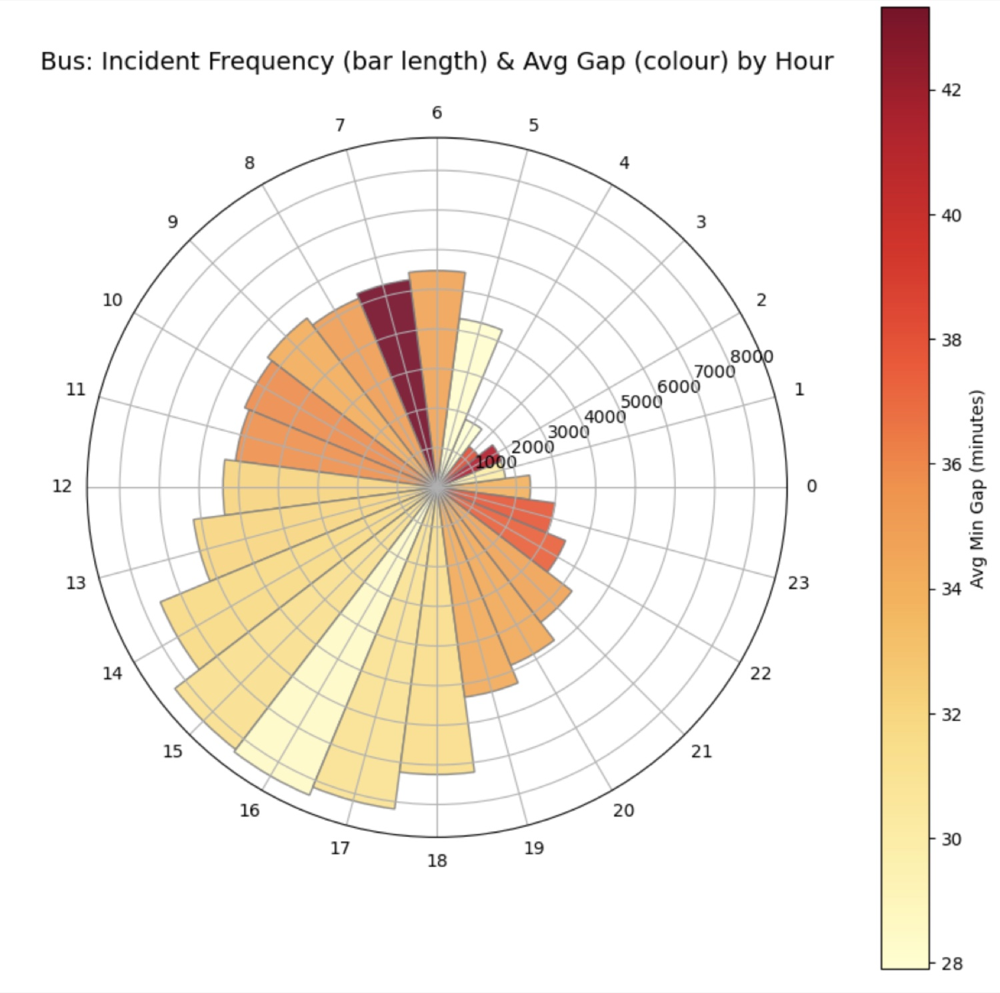
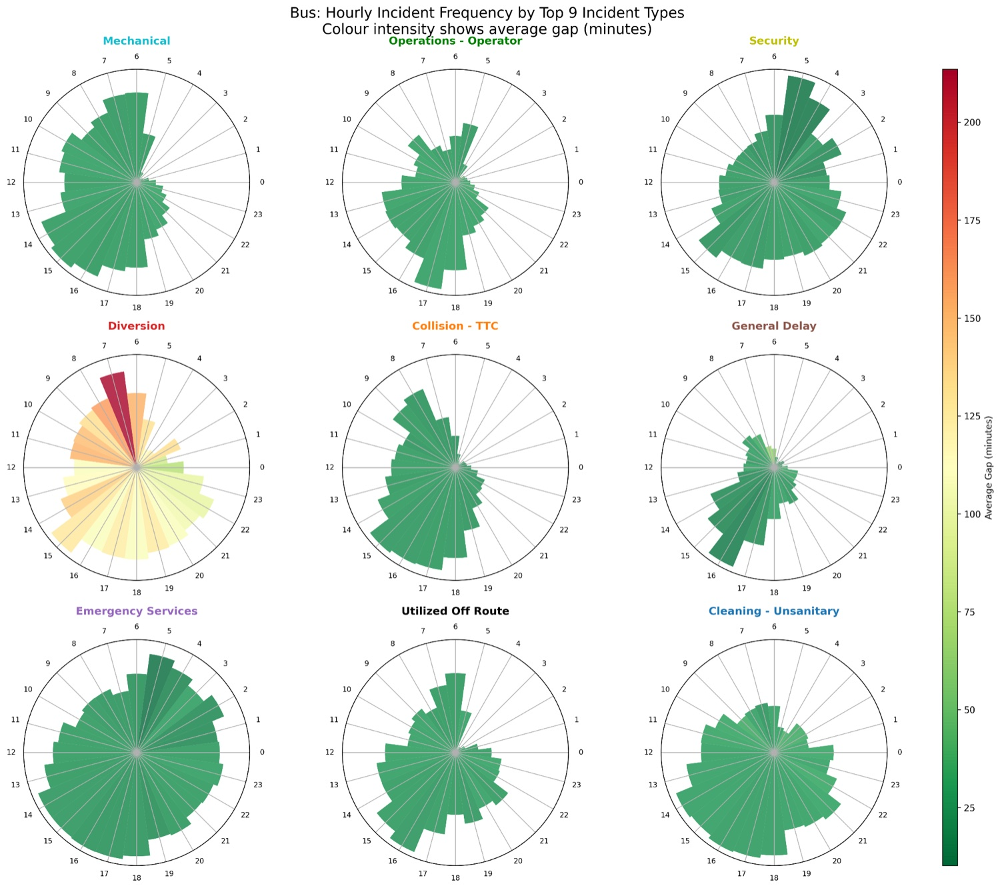

Three systems, one picture
The TTC logs every incident that delays a vehicle: when it happened, where, what caused it, how many minutes it added, and how big a gap it left before the next vehicle. The catch is that subway, streetcar and bus records live in three different files with different columns, different codes and different spelling habits.
I cleaned and combined two years and one month of data, from January 2023 to January 2025, from the City of Toronto Open Data Portal. Then I asked the same four questions of every mode: what causes delays, where they cluster, how bad they are, and when they happen.
What stops the TTC
Each mode has its own failure pattern.
Subway
Mostly people, not machines: disorderly patrons, injured or ill customers, passenger alarms and other passenger-related incidents top the list.
Streetcar
A wider mix, including problems that only rails and overhead wires can have, such as switches and overhead power.
Bus
Mechanical problems far ahead of everything else, then operator and security incidents.

Where it happens
Bloor station has more subway incidents than any other, and three of the next four are the ends of the lines: Kennedy, Kipling and Finch.

Every top bus hotspot is a subway station with a bus terminal, where routes, crowds and transfers meet. Streetcar hotspots mix dedicated loops such as Exhibition and Kingston Road with subway stations like Union and Spadina, and Spadina has more streetcar delays than any other stop.
Routes 32 and 36, the two bus routes with the most incidents, run along Eglinton West and Finch West, the exact corridors that Lines 5 and 6 were built to serve. Moving those riders onto rapid transit should take pressure off the two least reliable bus routes in the system.

Splitting incidents by line makes Bloor stand out even more, and shows Yorkdale as a different kind of problem: fewer incidents, but long delays and big gaps when they happen. At the line level, Lines 1 and 2 carry almost all incidents with short average delays, while the Scarborough RT, closed in July 2023, had the longest average delays of any line despite few incidents.
How long is the wait?
The subway is by far the most reliable mode. More than 60% of its delay records report no delay or gap at all, and when a gap does open it is usually around 10 minutes.
Buses and streetcars look very different. Their delays pile up at round numbers like 10, 15 and 20 minutes, giving the histograms a saw-tooth shape. Real delays do not come in neat multiples of five, so these are most likely estimated by hand when the incident is logged. Gaps of around 20 minutes are common, which means service intervals widen a lot when something goes wrong.

The TTC's day
Each chart below is a 24-hour clock. The length of a bar is the number of incidents in that hour, and the colour is the average gap they leave.

Bus and streetcar incidents peak in the afternoon rush. Bus gaps also spike in the morning rush.
Subway incidents are highest in the morning rush and again around 10 p.m., though gaps stay short.
Security incidents on buses and streetcars peak early in the morning, before full service begins.
Breaking the clocks down by incident type shows patterns that the totals hide. Mechanical problems sit between 6 a.m. and 6 p.m., when vehicles are in service and problems are spotted and fixed. Diversions are rare but leave the biggest gaps, especially around 5 to 6 a.m. Reports of unsanitary conditions stay high into the evening on buses but drop off on streetcars before rising again between 9 and 11 p.m., which fits streetcars being concentrated downtown, where late-night crowds are.

Mind the data
The biggest obstacle was not the analysis. It was the station field.
Station and line names are typed in by hand, so the same station appears with typos, abbreviations and extra words, and the line field sometimes contains station names or unrelated codes. Even after cleaning and keeping only the names that cover 99% of records, 194 distinct subway station names remained. Because of this, the delays could not be matched to station coordinates and put on a map.
Dropdown fields for line and station at data entry, so names cannot drift.
Automatic delay logging from GPS or onboard systems, instead of minutes estimated by hand.
With clean locations, an interactive delay map that compares disruptions with service levels, construction and population.
Charts follow the official TTC line colours for subway lines, and buses and streetcars share one colour scheme for the incident types they have in common. Extreme delays were capped so that a few multi-hour incidents do not flatten everything else.
End of the line
All cleaning, analysis and plotting code is in one notebook in the repository, along with the raw and cleaned data.
Data: Toronto Transit Commission delay data (subway, streetcar and bus), City of Toronto Open Data Portal, Open Government Licence – Toronto. Final project for DS8007 Advanced Data Visualization, Toronto Metropolitan University. This page is an independent project and is not affiliated with the TTC.